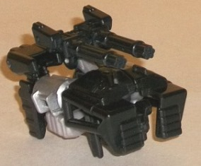
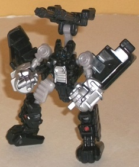
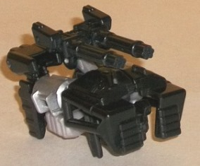
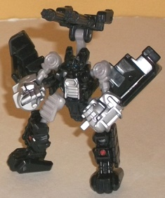
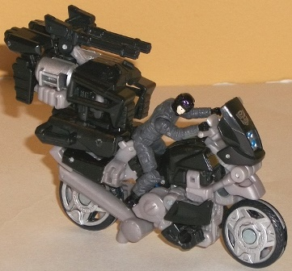
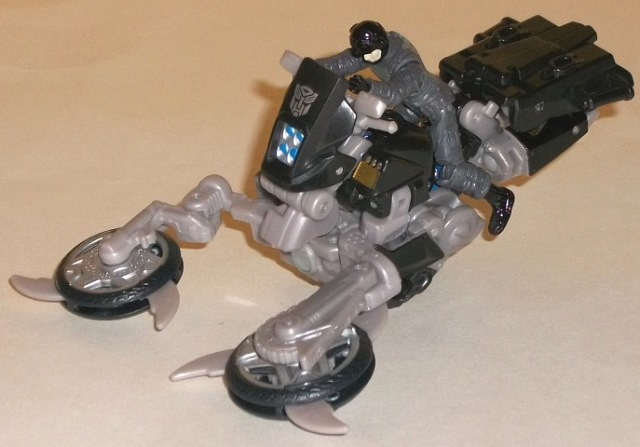
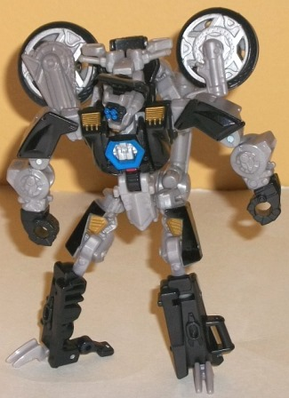

 
Difficulty of Transformation : Very Easy
Color Scheme : Black, silver, and some light milky brownish gray, light red, and metallic blue
Individual Rating : 6.4
Allegiances
: Autobot
Size
: Human Alliance Deluxe
 Pinpointer
Pinpointer


Difficulty of Transformation
: Very
Easy
Color Scheme
: Black, silver, and
some light milky brownish gray, light red, and metallic blue
Individual Rating
: 6.4
With this unique set,
you get not only the "main" robot Tailpipe and his human buddy, but a little
robot partner as well-- Pinpointer! In his alt mode, Pinpointer forms a
dual rotary gun emplacement that fits onto the rear section of Tailpipe's
vehicle mode. By itself, though, it's just about the right side to interact
with Human Alliance human figurines (though I say "interact" in a loose
sense, as he doesn't have handlebars or anything that the figurines can
actually grab onto). He also has a handle on the bottom to be held by Tailpipe
in this mode, making him a movie Targetmaster of sorts. The rotary guns
can move up or down as one (in two places), but otherwise there's not much
to do with Pinpointer in this mode except just have him sit there. His
legs are rather obviously the upper back end, but otherwise no robot mode
extras are particularly obvious in this mode.
A rather simple unfolding
of his alt mode gives you Pinpointer's robot mode, which is one of the
more alien-looking movieverse Autobots. His arms have large shells of his
alt mode behind the elbows, while his fists are overly large and his upper
arms rather skinny-- what makes him look particularly alien, though, is
his rather expressionless face with two metallic blue dots for eyes, and
what almost look like vestigial gun-limbs on the sides of his chest. (I'm
not sure if I'm reading that last bit right, given how small this guy is,
but that's what they look like to me.) His rotary guns sit behind his back,
while his legs are slightly large proportionally, but otherwise look fairly
great. The mold detailing on this guy-- sans the overly large/simple fists--
is very intricate, particularly on the face and chest (as discussed earlier),
though the overall color scheme is pretty tame. Black and gray/silver is
used far too much in the movie line, though at least there's a few small
paint apps of blue on his eyes and light red on his legs to breakup the
monochrome colors slightly. As for articulation, Pinpointer can move at
the shoulders, elbows, hips, and knees-- and all of those are on ball joints.
However, the aforementioned large panels on the back of his elbows can
get in the way of movement a bit, and if you fold his rotary guns onto
his back, he becomes a bit too back-heavy to stand up easily.
Overall, Pinpointer
is a fun little partner for larger 'bots, with a rather unique robot mode
that's surprisingly poseable for the size. His arm proportions are rather
off, though, and his feet are fairly obvious in alt mode-- I also wish
you could move his guns around a bit more, but that last one's a minor
quibble.
 Tailpipe
w/ Sergeant Noble
Tailpipe
w/ Sergeant Noble



Difficulty of Transformation to Weapon
Mode
: Very Easy
Difficulty of Transformation to Robot
Mode
: Medium
Color Scheme
: Black, light milky
brownish gray, and some silver, metallic blue, light red, and light metallic
gold
Rating
: 8.9
Tailpipe's vehicle mode
is a motorcycle, and for the most part he pulls off this mode pretty well.
The proportions are pretty spot-on for the alt mode, and although you can
see through the cycle at a few minor points from a straight-on side view,
at pretty much every other angle these gaps aren't apparent. The only really
visible robot mode extras are his lower arms, which rather obviously (particularly
because of the apparent fists) are on the sides near the front of this
mode. His wheels are also a bit off-center, but this is due to his weapon
mode (discussed shortly) and in most angles isn't obvious. Like Pinpointer,
Tailpipe's color scheme certainly isn't anything to write home about--
black and light gray/silver are just way overused at this point, and in
this mode only the blue headlights give the toy any color. The mold detailing
is quite good, however, with even things like the "chains" around the wheel
hubs and the gas cap molded into the toy. Except for the wheel hubs and
windshield, most of this mold detailing is unfortunately either left unpainted
or painted black when another, less monochrome color would've looked better.
Tailpipe doesn't have any flip-down kickstand piece in this mode, but the
plastic nub that juts out below his (ahem) tailpipe is enough to keep him
upright. He also has two areas for C-clip weapons if you have them, on
the sides of the back end of this mode. As for Tailpipe's human partner
Sergeant Noble, he's nothing special-- your typical Human Alliance figurine
soldier in body armor, with nothing to really differentiate him. Because
of the alt mode, Tailpipe only has handlebars for human partners to grab
onto, though, so they don't exactly stay perched very securely on this
mode.
Tailpipe's weapon mode
isn't very different from his vehicle mode-- the two wheels are both folded
forward in front of the windshield and then flipped horizontally, with
little blade-like things folding out of the wheels themselves to make a
bit of a "sawblade" weapon. (The handle for larger robots to hold him in
this mode is that same "nub" underneath his exhaust pipe that I mentioned
earlier.) It's more of a gimmick than a genuine alternate mode, but it
doesn't really compromise the other modes much, so I don't mind its existence,
unlike on some of other Human Alliance deluxes where the weapon mode really
inhibits one or both of the other modes.
In robot mode, Tailpipe
looks pretty decent, with some great proportions on his "core robot"--
the arms, legs, chest, and head are all in pretty good proportion to each
other, and his articulation is pretty good as well-- he can move at the
neck, shoulders (at two points), elbows (at two points), wrists, hips,
and knees (at two points). So other than slightly restricted hip articulation,
he's pretty good. His paint apps take on a bit of a more colorful look
in this mode, something that was definitely missing from his other modes--
the light gold paint apps on his upper legs and shoulders look good, but
that blue on his chest and eyes is just a great shade of the color, and
contrasts extremely well with the black. I wish it was used more. As for
the downsides, Tailpipe has a fair amount of vehicle kibble on his back--
though most would argue (as would I) that the wheels behind his shoulders
help to frame the mode and give it a distinct silouhette and are, thus,
not kibble-- the windshield behind Tailpipe's head, the large exhaust pipe
behind his back, and some other gray bits that connect his various vehicle
parts all stick out from his back a bit. They don't get in the way of movement
much, but can be a bit of an eyesore at certain angles, and I wish they
locked into place or something, even if their joints are tight enough to
keep them in a certain position without any floppiness. I'm also conflicted
about Tailpipe's face sculpt. On the one hand, having four eyes and no
other face to speak of makes him look really inhuman, which doesn't fit
well for an Autobot, in my opinion. On the other hand, I do like how the
four eyes mirror the four headlights in vehicle mode, thus making it look
like he's "looking through" said vehicle windshield, and there is a little
piece behind the head that can make his four eyes look up or down (as one),
which is a pretty neat little gimmick on a toy this size.
Tailpipe is one of the
better Human Alliance figures, with pretty good proportions, good articulation,
and doesn't suffer much from his "weapon mode". His color scheme is pretty
dull, and I wish he had less vehicle kibble in robot mode (or that it folded
away better), but he's still a pretty good mold. Add in that he comes with
not just a little human partner, but also a "Minicon"-sized little Targetmaster
partner, and you get a lot of play value for $10 with this pack. Recommended.
Reviews by Beastbot